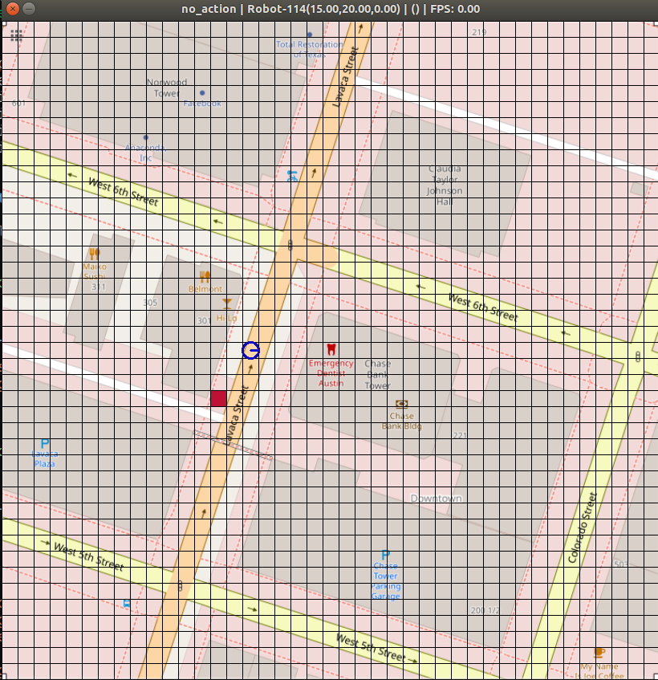
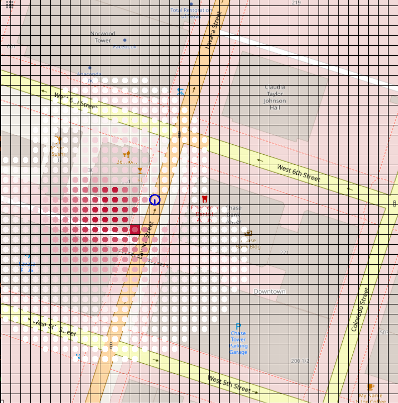

Spatial Language Understanding for Object Search in Partially Observed City-scale Environments
Kaiyu Zheng,
Deniz Bayazit,
Rebecca Mathew,
Ellie Pavlick,
Stefanie Tellex
Department of Computer Science, Brown University
30th IEEE International Conference on Robot and Human Interactive Communication (RO-MAN), 2021
Github repository: https://github.com/h2r/sloop
ArXiv: https://arxiv.org/abs/2012.02705
Table of Contents:
- Installation
- Download Dataset & Models
- Download Results & Reproduce
- OpenStreetMap Demo
- AirSim Demo
- Citation
Talk & Demo
1. Installation
The required python version is Python 3.6+.
-
Clone the repository and create and virtual environment with the following lines.
git clone git@github.com:h2r/sloop.git cd sloop; virtualenv -p $(which python3) venv/sloop source venv/sloop/bin/activateFor the last step, you can also do
source setup.bashfor convenience. -
Install pomdp-py
pip install pomdp-py>=1.2.4.5 -
Install the
slooppackage. Assume you're at the root of the sloop repository.pip install -e .Note that this will install a number of dependencies, including pomdp-py version 1.2.4.5. See
setup.pyfor the list of packages. The>=symbol assumes backwards compatibility of those packages. -
Download spaCy model. For dependency parsing, we use the
en_core_web_mdmodel from spaCy. You can download it by:python -m spacy download en_core_web_md
2. Download Dataset & Models
There is one dataset and two models.
-
The dataset contains OpenStreetMap data and AMT spatial language descriptions and annotations. Download the dataset from here (SL_OSM_Dataset, 3.6MB), and place it under
sloop/datasetsand extract there. After extraction your directory structure should look like:/ # repository root sloop/ ... datasets/ SL_OSM_Dataset/ amt/ frame_of_ref/ ...Check out this wiki page for documentation about the dataset.
-
The models are the frame of reference prediction models. There is a front model (for front and behind) and a left model (for left and right). Download the models from here (models.zip, 42.4MB) and place it under
sloop/oopomdp/experiments/resources.After extraction your directory structure should look like:
/ # repository root sloop/ ... oopomdp/ experiments/ resources/ models/ iter2_ego-ctx-foref-angle:front:austin ...
3. Download and Process Results
You can download the full results (including individual trial results) from here
(all-joint-sloop.zip, 2.0GB), and place it under sloop/
After extraction your directory structure should look like:
/ # repository root
sloop/
results/
all-joint-sloop/
langprior-austin_00_informed#5-austin-laser:fov=90:min*range=1:max*range=3:angle*increment=0.5:occlusion*enabled=False-na/
...
To process results:
cd sloop/results/all-joint-sloop-
python gather_results.pyExpected output
... Warning: <class 'sloop.oopomdp.experiments.reward_result.RewardsResult'> result file rewards.yaml not found in /media/kz-wd-ssd/repo/sloop/results/all-joint-sloop/langprior-austin_380_rule#based#ego>ctx>foref>angle-austin-laser:fov=90:min*range=1:max*range=4:angle*increment=0.5:occlusion*enabled=False-ego>ctx>foref>angle Collected results in langprior-austin_380_rule#based#ego>ctx>foref>angle-austin-laser:fov=90:min*range=1:max*range=4:angle*increment=0.5:occlusion*enabled=False-ego>ctx>foref>angle Collected results in langprior-cleveland_41_mixture#full#auto-cleveland-laser:fov=90:min*range=1:max*range=3:angle*increment=0.5:occlusion*enabled=False-ego>ctx>foref>angle Collected results in langprior-honolulu_19_informed#5-honolulu-laser:fov=90:min*range=1:max*range=3:angle*increment=0.5:occlusion*enabled=False-na Collected results in langprior-honolulu_35_keyword-honolulu-laser:fov=90:min*range=1:max*range=3:angle*increment=0.5:occlusion*enabled=False-na Collected results in langprior-washington,dc_33_keyword-washington,dc-laser:fov=90:min*range=1:max*range=4:angle*increment=0.5:occlusion*enabled=False-na Warning: <class 'sloop.oopomdp.experiments.states_result.StatesResult'> result file states.pkl not found in /media/kz-wd-ssd/repo/sloop/results/all-joint-sloop/langprior-austin_380_rule#based#ego>ctx>foref>angle-austin-laser:fov=90:min*range=1:max*range=4:angle*increment=0.5:occlusion*enabled=False-ego>ctx>foref>angle Collected results in langprior-cleveland_39_keyword#auto-cleveland-laser:fov=90:min*range=1:max*range=5:angle*increment=0.5:occlusion*enabled=False-na Collected results in langprior-denver_29_informed#5-denver-laser:fov=90:min*range=1:max*range=4:angle*increment=0.5:occlusion*enabled=False-na Collected results in langprio ...This will generate many plots and results in png/csv/yaml/json formats.
-
python ../refine.py ./This will generate some more tables that are better organized and readable, using the files generated from the last step as input.
To reproduce the experiment
cd sloop/results/all-joint-sloop- Notice there are several scripts
run_{1,2,3,4}.sh. Each contains commands to run individual trials. You can break them up further if you want more parallelization (you can automatically break them up using thegenerate_run_scripts.pyand increase the value for the variableSPLIT. - Now, run the experiment by running
./run_#.shwher#is the index of the run file. Note that because the experiment is random, the final result may differ slightly from those reported in the paper.
4. Running on OpenStreetMap
You can now start a demo of spatial language object search on an OpenStreetMap by running
cd sloop/oopomdp/experiments
python interface.py
This starts a terminal interface. We will walk through an example below.
At start, the program loads several things:
$ python interface.py
pygame 2.0.1 (SDL 2.0.14, Python 3.8.8)
Hello from the pygame community. https://www.pygame.org/contribute.html
Loading spacy model...
Loading spatial keywords...
Loading symbol to synonyms...
Then, it asks for a city name. You can enter any one from austin, cleveland, denver, honolulu, washington_dc.
We will enter austin.
map name: austin
Loading mapinfo
Then, it asks for number of objects (maximum 3). We will enter 1:
num objects, max 3 [2]: 1
Then, sensor range; The is the depth of the fan-shaped sensor with fixed field of view angle of 90 degrees. Sensor range of 3 refers to a range of 15m, 4 is 20m, 5 is 25m.
Sensor range [4]: 3
You can enter the true x, y location of the target object (a red car). Leave it blank for random.
x, y for object R [random]:
Then, a window pops up. The blue circle is the robot. Its starting location is random.

Then, You are asked to enter a spatial language description of the target's location.
Hint: the red car is by the lavaca street behind HiLo.
Now you can enter the method that essentially interprets the language as a prior belief over the target location,
through one belief update step. The choices are mixture, sloop, keyword, informed, uniform.
They correspond to SLOOP(m=4), SLOOP, MOS(keyword), informed, uniform in our experiments.
Prior type [mixture]:
Loading ego_ctx_foref_angle model for right
...
Then the program processes the language, and then the robot starts to search. You will see output similar to this
...
Language: "the red car is by the lavaca street behind HiLo."
MAP: austin
{'entities': ['RedHonda', 'HiLo', 'LavacaSt'], 'relations': [('RedHonda', 'LavacaSt', None), ('RedHonda', 'HiLo', 'behind')], 'lang': 'the RedHonda is by LavacaSt behind HiLo.'}
2021-07-07 13:49:44.438213 Event (Normal): Trial interface-mixture_mixture-austin-laser:fov=90:min*range=1:max*range=3:angle*increment=0.5:occlusion*enabled=False-ego>ctx>foref>angle | Step 1: action: move-vw-TurnRight reward: -11.000 cum_reward: -11.000 NumSims: 300 PlanTime: 0.61667
2021-07-07 13:49:45.094287 Event (Normal): Trial interface-mixture_mixture-austin-laser:fov=90:min*range=1:max*range=3:angle*increment=0.5:occlusion*enabled=False-ego>ctx>foref>angle | Step 2: action: move-vw-TurnRight reward: -11.000 cum_reward: -22.000 NumSims: 300 PlanTime: 0.61652
2021-07-07 13:49:45.781581 Event (Normal): Trial interface-mixture_mixture-austin-laser:fov=90:min*range=1:max*range=3:angle*increment=0.5:occlusion*enabled=False-ego>ctx>foref>angle | Step 3: action: move-vw-TurnRight reward: -11.000 cum_reward: -33.000 NumSims: 300 PlanTime: 0.64700
2021-07-07 13:49:46.453592 Event (Normal): Trial interface-mixture_mixture-austin-laser:fov=90:min*range=1:max*range=3:angle*increment=0.5:occlusion*enabled=False-ego>ctx>foref>angle | Step 4: action: move-vw-Forward reward: -11.000 cum_reward: -44.000 NumSims: 300 PlanTime: 0.63122
2021-07-07 13:49:47.136918 Event (Normal): Trial interface-mixture_mixture-austin-laser:fov=90:min*range=1:max*range=3:angle*increment=0.5:occlusion*enabled=False-ego>ctx>foref>angle | Step 5: action: find reward: 1000.000 cum_reward: 956.000 NumSims: 300 PlanTime: 0.65474
2021-07-07 13:49:47.164189 Event (Normal): Trial %s | Task Finished!
...
and the window now may look something like this:

5. Running on AirSim
This requires installation of Unreal Engine 4 and AirSim, following AirSim's documentation. (Linux, Windows), as well as downloading assets for the UE4 environment e.g. Neighborhoods and Urban City. Detailed instructions can be found in this wiki page.
The search trial is started by running python controller.py.
Here is an example screenshot:

6. Citation
@inproceedings{sloop-roman-2020,
title={Spatial Language Understanding for Object Search in Partially Observed Cityscale Environments},
author={Zheng, Kaiyu and Bayazit, Deniz and Mathew, Rebecca and Pavlick, Ellie and Tellex, Stefanie},
booktitle={2021 IEEE International Conference on Robot and Human Interactive Communication (RO-MAN)},
year={2021},
organization={IEEE}
}